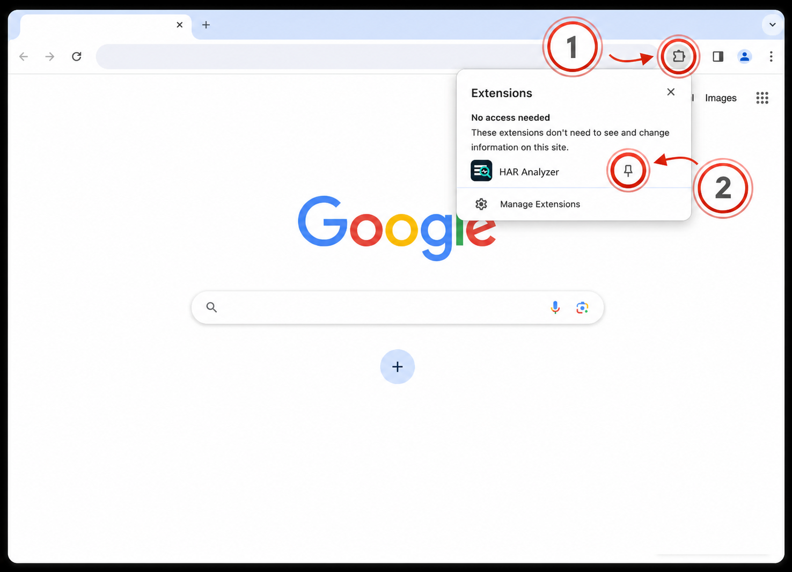
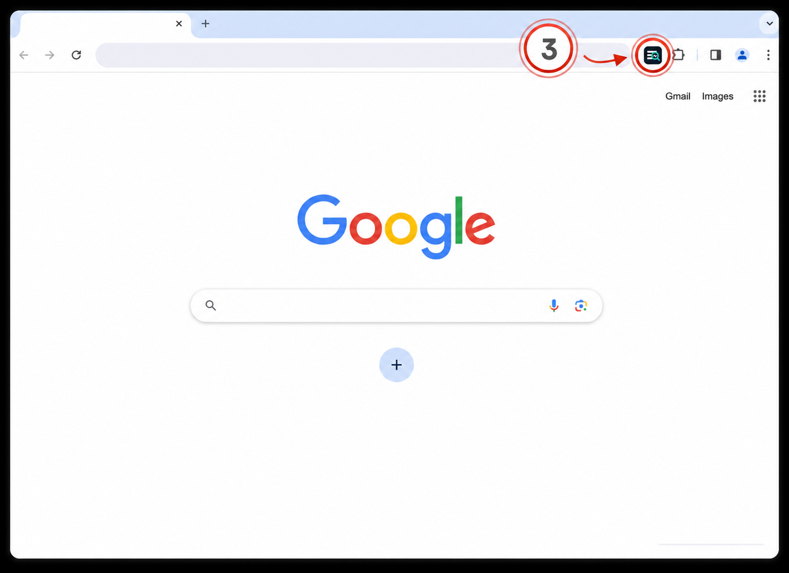

HAR Analyzer Installed
Click the puzzle piece (1) in the top right of your browser. Then click the pin icon (2) next to HAR Analyzer:

Open HAR Analyzer (3) on a website to upload a HAR file or start live capture:

Click the puzzle piece (1) in the top right of your browser. Then click the pin icon (2) next to HAR Analyzer:

Open HAR Analyzer (3) on a website to upload a HAR file or start live capture:
